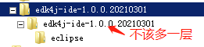
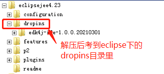

如何安装或更新
如何刷新
启用插件
查看当前版本
方法1：
（1）解压下载的压缩包，解压后文件目录如下图，不要在文件夹外再套一层同名文件夹：


（2）将解压后的文件夹，复制到eclipse安装目录下的dropins文件夹中，如下图所示：

方法2：
在eclipse/dropins目录下，新建一个文件，文件名自己起， 后缀名为".Ink"（注意是大写的i，不是小写的L），例如edkIde.Ink用文本编辑器打开，输入下面内容：
path=D:/eclipsePlugin/edk4j-ide-${具体版本号}
这句的意思是，指定插件所在目录，注意路径里用的是“/”，不是“\”，别输错了
样例如下：
path=D:/programs/eclipsePlugIn/edk4j-ide-1.0.0.20210301